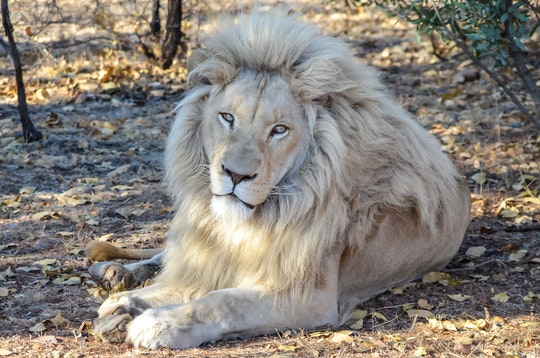
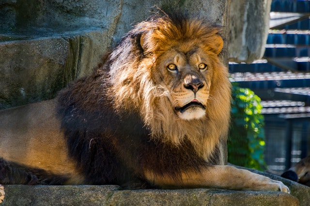

Leão
Panthera leo da família felidaeÉ uma espécie de mamífero carnívoro, a espécie é atualmente encontrada na África subsaariana e na Ásia, com uma única população remanescente em perigo, foi extinto na África do Norte e no Sudoeste Asiático. Por centenas de anos, o leão tem sido usado como símbolo de bravura e nobreza em diversas civilizações e culturas.
Só o macho possui a juba e o leão é o único felino que a possui. Há duas teorias que podem justificar a sua existência, a primeira diz que a juba seria um meio de se defender de predadores e de luta por território.
"O leão joga seu filho no abismo, fazendo despertar nele a força do rei das selvas."
Você já deve ter ouvido a seguinte frase: “o leão é considerado o rei da selva”, mas você entende o motivo do leão receber esse título? Considerar o “leão, rei da selva” é apenas uma metáfora que se mantém até os dias atuais. Os Gregos colocavam os leões como representação de nobreza e sobretudo que eram mais fortes e honrados. Ele pode ser considerado o rei por ser o predador no topo da cadeia alimentar. Mas o erro está em dizer que ele é rei da selva. Leões vivem em savanas. Locais com poucas árvores e humidades.
- Surgiu: 124.000 anos
- Tipo: Mamífero
- Idade Média: 14 anos
- Macho Adulto: 250kg
- Fêmea Adulta: 180kg
- Gestação: 119 dias
- Altura: 1,20 metros
Esses grandes felinos vivem em bandos de 5 a 40 indivíduos, sendo os únicos felinos de hábitos gregários. Em um bando, há divisão de tarefas: as fêmeas são encarregadas da caça e do cuidado dos filhotes, enquanto o macho é responsável pela demarcação do território e pela defesa do grupo de animais maiores ou mais numerosos (contra eventuais ataques de hienas, búfalos, elefantes e outros leões machos).